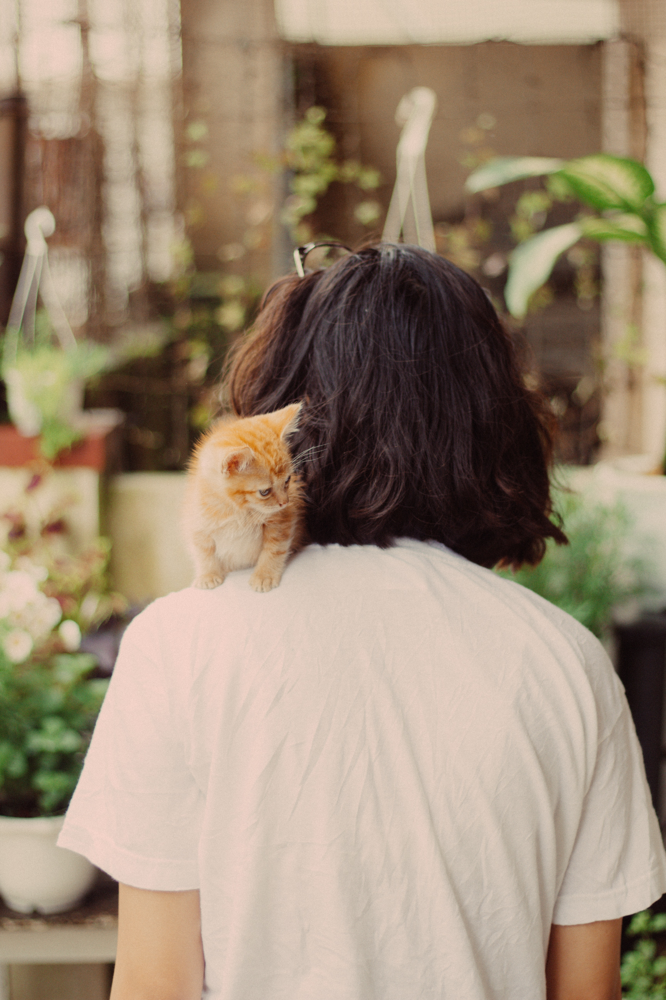
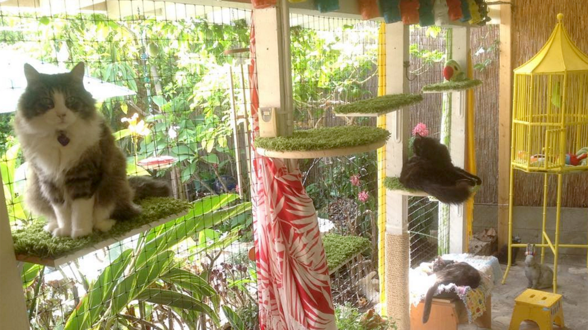

Midori surge en 2023 con la idea de ayudar a todo aquel que tenga que irse de vacaciones y necesite un lugar seguro y agradable donde alojar a su amigo felino. Nuestro equipo consta de cinco profesionales que brindarán atención contínua a tu gato, para que no tengas que preocuparte por nada. Cada gato es un amigo para nosotros y nuestra misión es que pueda sentirse cómodo en nuestros espacios, ya sea en su habitación privada o en nuestro gran patio donde podrá socializar con otros felinos.
